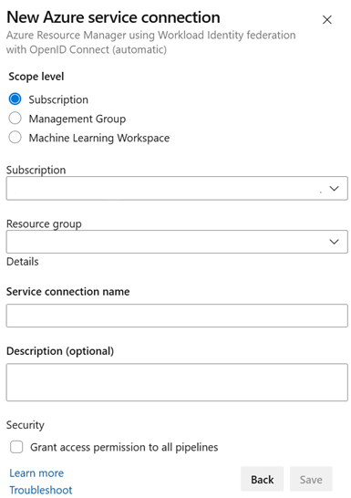

こんにちは、Japan Developer Support Core チームです🐶
Azure DevOps では、Service Principal の有効期限を気にすることなく、Service Connection を管理できる新機能が追加されました。今回は、この便利な機能、Workload Identity Federation を使用した Service Connection についてご紹介します。
Workload Identity Federation とは
Azure DevOps における Service Connection の認証方法に革命をもたらす Workload Identity Federation が、Azure Resource Manager タイプの Service Connection で利用可能になりました。これは、Azure Pipelines と Azure リソース間の認証プロセスを効率化し、セキュリティを強化する画期的なステップです。
従来の Service Connection では、Service Principal のクライアント シークレットの管理がセキュリティ上の大きな課題となっていました。これに対する唯一の代替手段は、マネージド ID を用いて Self-hosted agent を運用することでした。しかし、Workload Identity Federation の登場により、このような制約から解放されることになります。
OpenID Connect (OIDC) を駆使した Workload Identity Federation は、有効期間が短いトークンを使用し、Azure への認証を行うことで、セキュリティリスクを軽減します。これにより、シークレットの共有や管理の必要がなくなり、DevOps の運用がより安全かつスムーズになります。
Workload Identity federation の詳細については、Workload Identity Federation や Public preview of Workload identity federation for Azure Pipelines で紹介しています。
また、マネージド ID を使用した Service Connection については、Service connection で利用中の Service principal を Managed identity に移行する手順 をご確認ください。
従来の Service Connection からの移行
従来のクライアント シークレットを使用した Service Connection から、Workload Identity Federation を利用した Service Connection への移行は、以下の手順で簡単に行えます。
- Azure DevOps にサインインし、プロジェクトの [Project settings] > [Service connections] に移動します。
- 変換したい Service Connection を開き、[Overview] タブを確認します。
- “Convert” ボタンを押下し、Workload Identity Federation を利用した Service Connection へ変換します。
変換後は、7 日以内であれば、Overview タブに表示される “Revert conversion to the original scheme” ボタンから元の Service Connection に戻すことが可能です。万が一問題が生じた場合でも、安心して変換を試すことができます。
Service Connection の作成方法
Workload Identity Federation を使用する Service Connection の作成には、自動（automatic）と手動（manual）の 2 つの方法があります。
- 自動での作成方法:
- [Project settings] > [Service connections] に移動し、[New service connection] を選択します。
- [Azure Resource Manager] を選び、[Workload Identity federation (automatic)] を選択します。
- 対象 Subscription を選択します。スコープを Resource Group に絞りたい場合は Resource Group を選択します。
 - その他必要な情報を入力し、[Save] をクリックしてサービス接続を作成します。
- 手動での作成方法:
Service Connection を作成する際には、後述の権限が必要ですが、すべての権限を一人の作業ユーザーに付与することは、時に困難です。この場合、Workload Identity federation (manual) を選択することで、Azure Portal と Azure DevOps portal それぞれの作業に必要な権限を分けて付与し、Service Connection を作成できます。
また、ご自身で用意した Service Principal に加え、マネージド ID を使用することもできます。これにより、よりセキュアで管理しやすい環境を構築可能です。
詳細な手動での作成手順は Azure Resource Manager Workload Identity サービス接続を手動で設定 を参照ください。
automatic はすべて自動で作成されるため手順が簡単ですが、Service Principal が自動的に命名されてしまうため運用上の管理が難しく、作業ユーザーに強い権限が必要となるデメリットがあります。その場合は、manual での作成もご検討ください。
Workload Identity federation の Service Connection作成に必要な権限
Service Connection を作成する際には、特定の権限が必要です。以下の権限を確認し、必要に応じて付与してください。
- Azure DevOps: Organization/Project における Service Connection の Creator または Administrator ロール。
- Microsoft Entra ID: Service Principal を Azure テナント上に作成するための権限。詳細は ユーザーはアプリケーションを登録できる」の設定について を参照ください。
- Azure サブスクリプション: ロールを付与する権限が必要です。具体的には Microsoft.Authorization/roleAssignments/write 権限が必要となり、”所有者” または “ユーザー アクセス管理者” ロールが必要です。もし、対象の Service Connection が、リソース グループを対象としている場合は、リソース グループに対する権限で操作可能です。
Workload Identity Federation に対応しているパイプラインタスク
2024 年 6 月時点では、すべてのパイプライン タスクが Workload Identity Federation をサポートしているわけではありませんので、ご注意ください。
詳しくは こちら に記載がありますが、複数のタスクにて対応、対応予定があります。
なお、Marketplace からインストールされたタスクのサポートについては、拡張機能の発行元に問い合わせる必要があります。
まとめ
Azure DevOps の Service Connection を選択する際には、セキュリティ、運用の容易さ、および環境の柔軟性を考慮することが重要です。マネージド ID、Service Principal、Workload Identity Federation のそれぞれには、特定のシナリオや要件に適したメリットとデメリットがあります。適切な選択を行い、DevOps の実践をより効果的かつ安全に進めるために、上記が役立つことを願っています。
本ブログの内容は弊社の公式見解として保証されるものではなく、開発・運用時の参考情報としてご活用いただくことを目的としています。もし公式な見解が必要な場合は、弊社ドキュメント (https://docs.microsoft.com や https://support.microsoft.com) をご参照いただくか、もしくは私共サポートまでお問い合わせください。